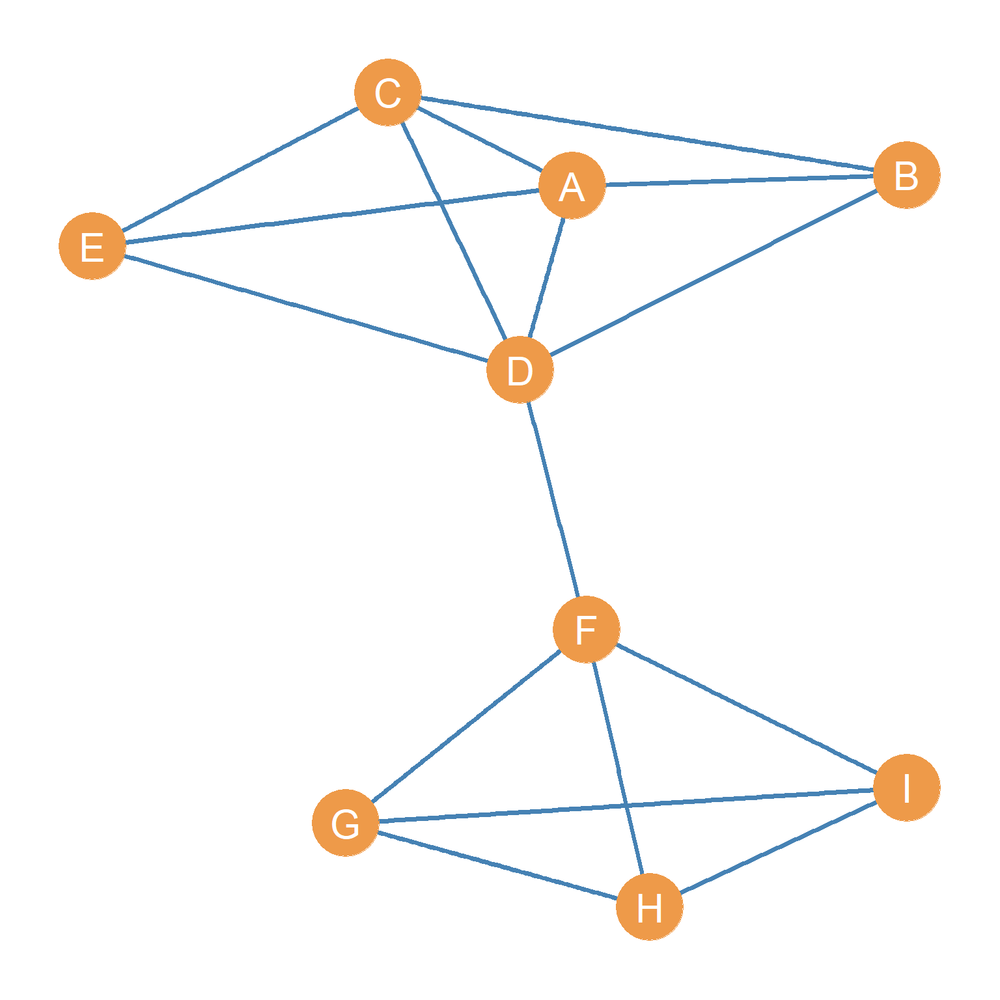
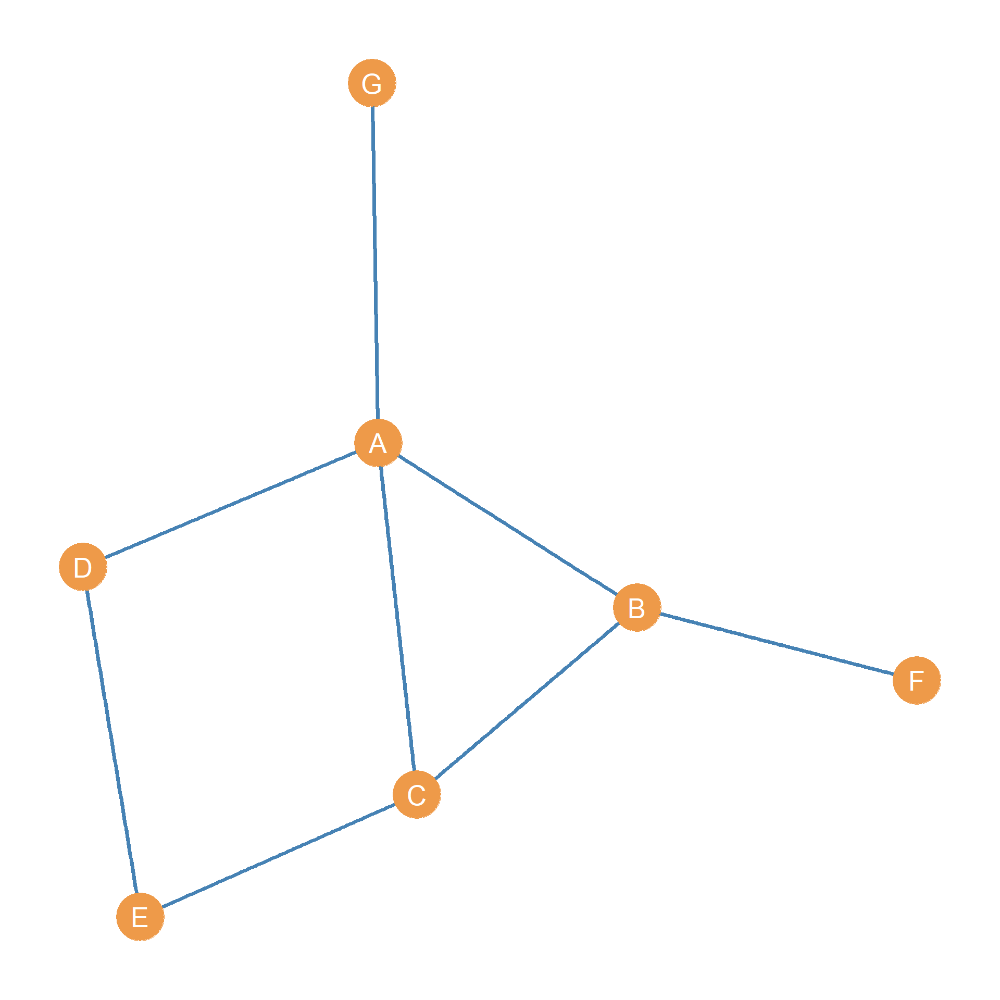
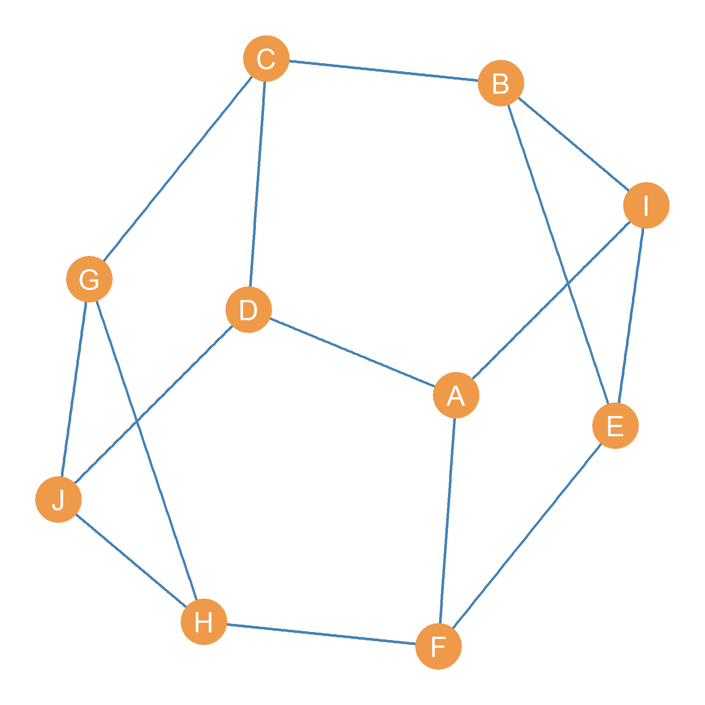

| A | B | C | D | E | F | G | H | I |
|---|---|---|---|---|---|---|---|---|
| 4 | 3 | 4 | 5 | 3 | 4 | 3 | 3 | 3 |
Many graph metrics are based on the degrees of the node in the graph (as defined in ?@sec-degree). Here we cover the most important.
Computing the degree of each node in the network gives us a vector (called k), containing the degree of each node. The vector is of “length” n, where n is the number of nodes in the network. This is called the graph’s degree set, written k.
What is a vector? A vector is a sequence of numbers. Thus, \((1, 2, 3, 4)\) is a vector, and so is \((0, 1, 1, 0, 1, 1, 1)\) and \((0.23, 0.39, 0.89)\). The length of a vector is the number of elements in it. Thus, the length of the vector \((1, 2, 3, 4)\) is 4 and the the length of the vector \((0, 1, 1, 0, 1, 1, 1)\) is 7. When vectors are considered as sets of numbers, the length of the vector is equivalent to the cardinality of the set defined by the vector.
As you may have already figured out, there are as many members of this set as there are nodes in the graph, so the cardinality of the degree set is the same as that of the graph’s node set \(|\mathbf{k}| = |V|\).

Figure 1: A undirected graph.
Let’s consider the graph shown in Figure 1 again. The graph’s degree set k is shown in Table 1.
| A | B | C | D | E | F | G | H | I |
|---|---|---|---|---|---|---|---|---|
| 4 | 3 | 4 | 5 | 3 | 4 | 3 | 3 | 3 |
When we list the members of the degree sequence (each node’s degree) in decreasing order, from largest to smallest, this is called the graph’s degree sequence, denoted by d. Every graph has its own degree sequence, but graphs with very different structures (going by other graph metrics) can share the same degree sequence (Kim et al. 2009).
It is easy to see that if we order the values of the degree set from higher to lower, we would obtain the following degree sequence:
| 5 | 4 | 4 | 4 | 3 | 3 | 3 | 3 | 3 |
When studying a network, we are usually interested in the range of connectivity of people. What is the maximum number of connections somebody has in the network? What is the smallest set of neighbors someone has? These two graph metrics are called the maximum and minimum degree, respectively. And are written \(k_{max}\) and \(k_{min}\). They are given by taking the maximum or the minimum values of the graph degree set describing the network. Thus, if \(\mathbf{k}\) is the vector containing each node’s degree, then the minimum and maximum degrees are given by:
\[ k_{max} = max(\mathbf{k}) \tag{1}\]
\[ k_{min} = min(\mathbf{k}) \tag{2}\]
Where \(max(\mathbf{k})\) says “give me the largest number in the vector k, and \(min(\mathbf{k})\) says”give me the smallest number in the vector k. Returning to our running example of the graph shown in Figure 1, it is easy to see from the degree set in Table 1 that, for this network, \(k_{max} = 5\) and \(k_{min} = 3\).
The arithmetic difference between \(max(\mathbf{k})\) and \(min(\mathbf{k})\) gives us a sense of the heterogeneity or gap between the connectivity of the best-connected and the least well-connected nodes in the graph. This is called the graph’s degree range, and it is written \(k_r\):
\[ k_r = k_{max} - k_{min} \tag{3}\]
In this case, \(k_r = 5 - 3 = 2\), which tells us that in this graph, the difference between the best and most poorly connected nodes is not really that large. Most nodes have a fair number of links to others. In real-world networks, such as the graph of a social media platform like Meta, the degree range can be pretty wide, since the maximum degree can be in the millions and the minimum degree can be zero.
Note that if we know the degree sequence of an undirected graph, we can determine how many edges the graph has. This is because the degree of each node can be defined in terms of the total number of edges incident on it (as we noted earlier). So if we know each node’s degree, we can also determine how many edges there are in the graph.
The first step we need to take is to compute the sum of degrees for each node in the graph. This quantity is written \(\sum_i k_i\). For the degree set of the graph shown in Figure 1, we can see that the sum of the degrees \(\sum_i k_i = 32\) (go ahead, use a calculator to add up all the numbers in Table 1).
If you go back to the graph shown in Figure 1 and count the lines, you can see there are 16. So summing up the degrees of each node ended up totaling twice the number of edges shown in the graph: \(16 \times 2 = 32\). The reason for this is that each edge is incident (touches) two nodes, so it makes sense that when you add up the degrees of each node, you end up with twice the number of lines shown in the visual representation of the graph.
So the relationship between the sum of the degrees and the number of edges in an undirected graph is one of simple doubling. In equation form, this is written:
\[ \sum_i k_i = 2m \tag{4}\]
Where m is the cardinality of the graph’s edge set \(|E|\). Some people call this the first theorem of graph theory (Benjamin et al. 2015, 20)!
Another way to think about why we end up with twice the number of edges is that in an undirected graph \(G\), if node A is a member of the set of neighbors of node B, then node B is necessarily also a member of the set of neighbors of node A. Thus, when computing the degree of each node, the edge AB does double duty, counting for the computation of both node A and node B’s degree scores. When we sum the degrees, the edge thus shows up twice. Note that in the directed case, we don’t have that problem, in which case \(\sum_i k_i = m\).
Equation 4 has an interesting consequence that may not be immediately obvious. Putting our high-school algebra thinking cap on, we can solve for \(m\), and this will give us:
\[ m = \frac{\sum_i k_i}{2} \tag{5}\]
This tells us that the number of edges in a graph equals the sum of the degrees of its nodes divided by 2. However, this also tells us something else: For any undirected graph, the sum of the degrees of each node will always be an even number. That’s because we know that \(m\) is an integer (the number of edges in a graph can’t be a decimal), so that means that the numerator of the Equation 5, namely, the sum of degrees \(\sum_i k_i\) is divisible by two, and any number that is divisible by two (like 10, 24, 48, 120, etc.) is an even number. Ergo, the sum of degrees in a graph, \(\sum_i k_i\), is always an even number.
This last result, that the sum of degrees of a graph has to be even, has yet another not-so-obvious consequence. Consider the following two sums:
\[ 4 + 3 + 2 + 1 + 2 + 1 + 3 = 16 \tag{6}\]
\[ 4 + 3 + 3 + 1 + 2 + 1 + 3 = 17 \tag{7}\]
The numbers in Equation 6 add up to sixteen, which is an even number. So we know automatically that \(\{4, 3, 3, 2, 2, 1, 1\}\) could be the degree sequence of a possible graph with seven nodes (\(n = 7\)) and \(m = 16 \div 2 = 8\) edges. In fact, one such possible graph is shown in Figure 2.
However, we also know that since the sum shown in Equation 7 is an odd number, it cannot be the sum of degrees of any possible graph whatsoever. No undirected graph with seven nodes can have the degree sequence \(\{4, 3, 3, 3, 2, 1, 1\}\).
In graph theory terms, we say that the degree sequence \(\{4, 3, 3, 2, 2, 1, 1\}\) is graphical (could be the degree sequence of a possible graph), while the degree sequence \(\{4, 3, 3, 3, 2, 1, 1\}\) is not graphical.

Figure 2: An undirected graph with degree sequence k = {4, 3, 3, 2, 2, 1, 1}.
What’s the difference between the graphical sequence \(\{4, 3, 3, 2, 2, 1, 1\}\) and the non-graphical sequence \(\{4, 3, 3, 3, 2, 1, 1\}\)? Time to find out.
In a graph, let us call a node with an even degree an even node. Let’s call a node with an odd degree (you guessed it) an odd node. You will notice that in the graphical degree sequence, there are four odd nodes \(\{3, 3, 1, 1\}\) and three even nodes \(\{4, 2, 2\}\). The not graphical degree sequence has five odd nodes \(\{3, 3, 3, 1, 1\}\) and two even nodes \(\{4, 2\}\).
So the number of odd nodes in the graphical sequence is even (four), and the number of odd nodes in the non-graphical sequence is odd (five). Is this a coincidence? Turns out not!
In every graphical degree sequence, the number of odd nodes has to be an even number. That is to say, if a sequence of numbers has an odd number of odd numbers, then it cannot be the degree sequence of any possible graph! We could have checked because any sequence of numbers with an odd number of odd numbers sums to an odd number, and we already know that a sequence that sums to an odd number is not graphical.
The number of even nodes, on the other hand, as we saw before, can be odd, and the sequence is still graphical. That’s because any set of even numbers, odd or even, will sum to an even number. So what matters is the number of odd nodes, which has to be even for a degree sequence to describe a possible graph (Buckley and Harary 1990, 3). Heady!
Knowing the relationship between the sum of degrees and the number of edges, we can begin calculating other important graph metrics.
Once we know the sum of the degrees, we can compute an important graph metric called the average degree. This gives us a sense of whether there are many well-connected nodes in the graph (in which case the average degree is high), or whether the typical node has only a small number of neighbors (in which case the average degree is low).
To get the average degree for a graph, written \(\bar{k}\), all we need to do is compute the sum of degrees (like earlier) and divide it by the total number of nodes in the graph:
\[ \bar{k} = \frac{\sum_i k_i}{n} \tag{8}\]
In an undirected graph G like the one shown in Figure 1, the graph average degree is given by twice the total number of symmetric ties (the cardinality of the edge set as defined earlier) divided by the total number of nodes (the cardinality of the node set). Because of the identity identified in Equation 4, where \(\sum_i k_i = 2m\), we can also write the formula for the average degree as follows by switching the numerator:
\[ \bar{k} = \frac{2m}{n} \]
For Figure 1, the average degree of the graph is:
\[ \bar{k} = \frac{2m}{n} = \frac{2 \times 16}{9} = \frac{32}{9} = 3.6 \tag{9}\]
Although straightforward, the graph’s average degree is a powerful tool for analyzing the social world. For example, if we have two school clubs of the same size and ask students who their friends are in the club, we might get very different average degrees. Let us assume that the average degree in the first network is two, while in the second network it is five.
This statistic indicates that people in the second network have more friends within the group than those in the first network. If we are interested in why the first group failed and the second group kept meeting, we might understand that the underlying social relations of friendship, which might be theorized as contributing to the club’s survival, were weaker in the first group to begin with than in the second. We are thus able to gain insight into the causes and/or underlying conditions that shape the social world.
There is an intimate mathematical relationship between the graph density and the graph average degree. Let’s see what it is.
Take another look at ?@eq-dens1. It says that density is equal to:
\[ d(G)^u = \frac{2m}{n(n-1)} \tag{10}\]
We can write the same equation as the product of two different fractions. Like this:
\[ d(G)^u = \frac{2m}{n} \times \frac{1}{n-1} \tag{11}\]
Now, take a look at the first (left-hand) fraction of this product. Does it look familiar? It should, because it is the formula for the average degree we wrote down in Equation 8!
So that means if we know the average degree and the number of nodes in a graph, we also know the graph’s density without knowing the number of edges. Mathematical magic.
How do we do that? Well, substituting the fraction \(\frac{2m}{n}\) for its equivalent, the average degree \(\bar{k}\), in Equation 11 we get:
\[ d(G)^u = \bar{k} \times \frac{1}{n-1} = \frac{\bar{k}}{n-1} \tag{12}\]
So this formula tells us that the density of a graph is equivalent to its average degree divided by the number of nodes minus one. Pretty simple!
Once we know the average degree of a graph, it is possible to compute more complex measures of the heterogeneity in connectivity across nodes (e.g., the extent to which there is a very big spread between well-connected and not so well-connected nodes in the graph) beyond the simpler measures of range such as the difference between \(k_{max}\) and \(k_{min}\).
One such measure was proposed by the sociologist and statistician Tom Snijders in a 1981 paper (Snijders 1981). It is called the degree variance of the graph. It is written \(\mathcal{v}(G)\) and it is defined as the average squared deviation between the degree of each node and the average degree:
\[ \mathcal{v}(G) = \frac{\sum_i (k_i - \bar{k})^2}{n} \tag{13}\]
The equation says that to compute the degree variance, first we create a vector of the square of the difference between each node’s degree and the average degree of the graph \((k_i - \bar{k})^2\), then we sum all the values in this vector (note that since we are squaring all these values will be a positive number), and divide the result by the total number of nodes \(n\).
To compute the degree variance of the graph shown in Figure 1 using Equation 13, we can follow these steps:
| A | B | C | D | E | F | G | H | I |
|---|---|---|---|---|---|---|---|---|
| 0.2 | 0.31 | 0.2 | 2.09 | 0.31 | 0.2 | 0.31 | 0.31 | 0.31 |
\[ \mathcal{v}(G) = \frac{4.2}{9} = 0.47 \]

Figure 3: A 3-regular undirected graph of order 10.
The degree variance is intended to capture the extent of inequality in the connectivity of nodes in a graph. Inequality exists when a few nodes have many connections, while most nodes have only a few. The more inequality, the higher the variance. This means that in graphs where there is very little variation in the connectivity of each node (all nodes have roughly the same number of connections), the degree variance should be at a minimum.
The most extreme version of the low inequality case is shown in Figure 3. This graph has 10 nodes, and every node has the same degree \(k = 3\), so the average degree is also 3, \(\bar{k} = 3\). This is called a regular graph.
Because in a regular graph, every node has the same degree, we refer to regular graphs by their node degree (\(k\)) and their order (\(n\)) as k-regular graphs of order n. So, the example shown in Figure 3, where every node has degree equal to three (\(k = 3\)) and there are ten nodes (\(n = 10\)) is a three-regular graph of order ten. Because \(k - \bar{k} = 3 - 3 = 0\) for all nodes in the regular graph, The degree variance of a regular graph is always zero (because the numerator of Equation 13 will always be zero).
Just as we can compute the degree of each node, we may be interested in whether nodes in the network tend to connect to others of high degree, or whether connections occur at random, irrespective of degree. The first situation, in which people tend to connect to people of high degree, is called preferential attachment in network science (Barabási and Albert 1999). It is also referred to as a popularity tournament structure in sociology (Waller 1937). If you went to a real, live high school, you may know how this works.
To get a sense of whether a given node prefers to connect to others who also have a large number of connections, we can compute an index called the average nearest neighbor degree, which is conventionally written \(\bar{k}_{nn(i)}\).
This is given by the following formula:
\[ \bar{k}_{nn(i)} = \frac{1}{k_i} \sum_{j \in \mathcal{N(i)}} k_j \tag{14}\]
The formula says that to compute the \(k_{nn}\) of node i we take sum of the degrees of each of their neighbors j (remember that \(j \in \mathcal{N(i)}\) means “as long as node j belongs to the set \(N(i)\)”), and then divide it by the degree of node i.
| A | B | C | D | E | F | G | H | I |
|---|---|---|---|---|---|---|---|---|
| 3.8 | 4.3 | 3.8 | 3.6 | 4.3 | 3.5 | 3.3 | 3.3 | 3.3 |
As an example, the \(\bar{k}_{nn(i)}\) for each node in the undirected graph shown in Figure 1 are shown in Table 5. This is the vector of average nearest neighbor degrees for the graph \(k_{nn}\). The table indicates that nodes B and E tend most strongly to connect to others who are also popular, while G, H, and I show the weakest such tendencies.
But how can we know if a \(\bar{k}_{nn(i)} = 4.3\) is a big number or a small number? Well, we can compare each node’s \(\bar{k}_{nn(i)}\) to the average degree (\(\bar{k}\)) as defined previously. If a node’s \(\bar{k}_{nn(i)}\) is bigger than the average degree of the graph, then we can say that its neighbors are more likely to be popular than expected by chance. For instance, we know, from the calculation shown in Equation 9, that the average degree for this graph is 3.6, so a \(\bar{k}_{nn(i)} = 4.3\) tells us that a node connects to others that are (on average) more popular than the average person.
If we take the average of the average nearest neighbor degree vector for each node shown in Table 5, this would give us the graph’s average nearest neighbor degree (\(\bar{k}_{nn}\)). But what could this possibly mean? Well, this would tell us the typical number of friends that the typical friend of the typical node in the graph has! Essentially, the expected number of friends of friends of the average person.
In a mind-bending paper, the sociologist Scott Feld (1991) showed, that with very few exceptions (e.g., regular graphs), the average number of friends of the typical person (the graph’s average degree) is smaller than the average number of friends of friends of the typical person in the same social network (the graph’s average nearest neighbor degree). That is, your friends have more friends than you do. Don’t get depressed. This is just how social networks work.
Check it out for yourself! If we compute the graph’s average nearest neighbor degree from the numbers in the vector shown in Table 5, this would give us \(\bar{k}_{nn} = 3.7\), which is larger than the same graph’s average degree we computed earlier (\(\bar{k} = 3.6\)). Weird!